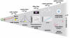
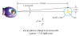
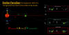
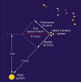
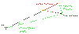
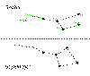
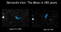
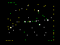

At the base of the ladder are fundamental
distance measurements, in which distances are determined directly,
with no physical assumptions about the nature of the object in
question. These direct methods are:
d (parsecs) = B (AU's) / p (arcseconds)
in which p is measured in arcseconds, d is measured in parsecs, and the baseline B (which sets the scale for the triangle) is measured in AU's
Example: What is the parallax angle to the nearest star, Proxima Centauri, which is 1.3 pc (15,000 AU's) away from us? Answer: p=B/d=1/1.3=0.77 arcseconds
  





Page last modified: